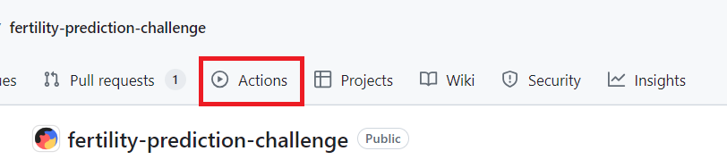
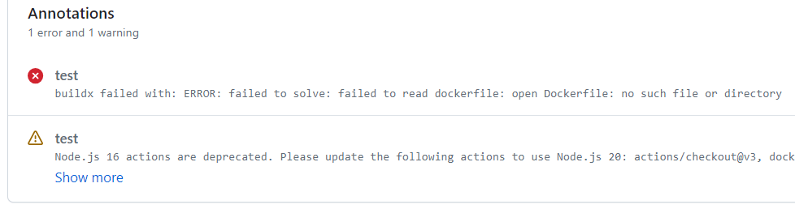
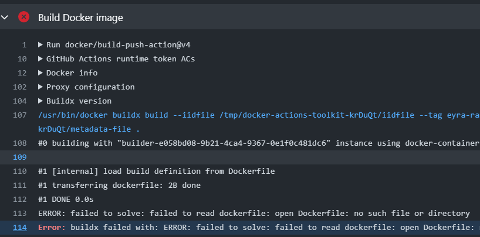

Frequent errors during submission, and how to debug
Here we show common errors during the automated tests and how to fix them.
When you submit your method, it will automatically run on the fake data first (“PreFer_fake_data.csv”). Only if this check is successful, the method will run on the holdout set. Here we will be adding common reasons why your submission might fail to pass this automatic checks.
Note: always test your method locally on the fake data before submitting (e.g. apply your method to the fake data to see if the method produces predictions) and debug in case of errors. Here we will mostly focus on errors that you might still encounter during this automated check even if your method was working locally).
How to find out if your method passed automatic checks
You can see it on the “Actions” tab in your own github repository. After you update your repository, you will see on this page whether your method passed automatic checks or not. Make sure to allow Github Actions: go to the “Actions” tab and click “I understand my workflows, go ahead and enable them.” 
How to find the error message
Click on the failed “run”. You’ll see a message there.

You can also click on “test” and view more detailed information about the error and the stage at which it occurred.

Common errors
Photo by Timothy Dykes on Unsplash